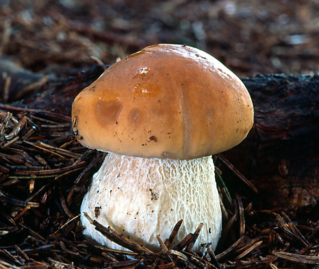

Onddozuria (Boletus Edulis) Boletaceae familiako onddoa da. Erretikulu zuria du
oinaren goialdean. Kapela marroi iluna dauka eta kupelaren itxurako oina.
Haragia zuria eta intxaur usainarekin.

oinaren goialdean. Kapela marroi iluna dauka eta kupelaren itxurako oina.
Haragia zuria eta intxaur usainarekin.